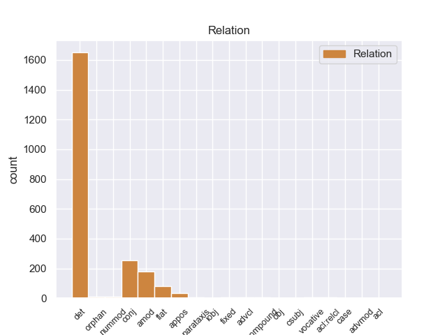
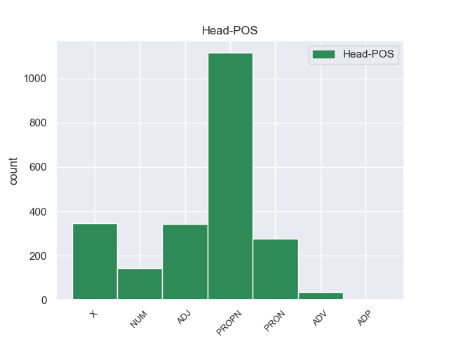
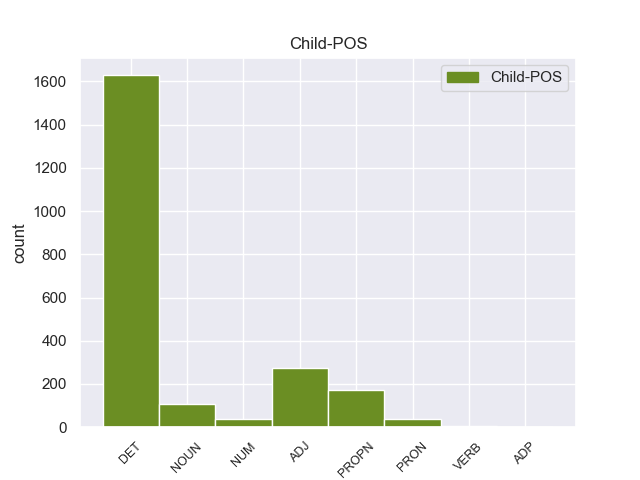

Distribution of features within this leaf



Morphosyntax Rules sorted by frequency.
- When the dependent token is the determiner(det) of the head token, and the head token is PROPN the Case needs to be Acc.
1 Ο _ _ _ _ 0 _ _ _
2 Εισαγγελέας _ _ _ _ 0 _ _ _
3 σ _ _ _ _ 0 _ _ _
4 τη ο DET AtDf Case=Acc|Gender=Fem|Number=Sing 5 det _ _
5 Γαλλία Γαλλία PROPN PROPN Case=Acc|Gender=Fem|Number=Sing 0 _ _ _
6 έχει _ _ _ _ 0 _ _ _
7 το _ _ _ _ 0 _ _ _
8 δικαίωμα _ _ _ _ 0 _ _ _
9 να _ _ _ _ 0 _ _ _
10 εκπληρώνει _ _ _ _ 0 _ _ _
11 τα _ _ _ _ 0 _ _ _
12 καθήκοντά _ _ _ _ 0 _ _ _
13 του _ _ _ _ 0 _ _ _
14 βάσει _ _ _ _ 0 _ _ _
15 του _ _ _ _ 0 _ _ _
16 νόμου _ _ _ _ 0 _ _ _
17 και _ _ _ _ 0 _ _ _
18 το _ _ _ _ 0 _ _ _
19 Σώμα _ _ _ _ 0 _ _ _
20 δεν _ _ _ _ 0 _ _ _
21 λαμβάνει _ _ _ _ 0 _ _ _
22 θέση _ _ _ _ 0 _ _ _
23 σχετικά _ _ _ _ 0 _ _ _
24 με _ _ _ _ 0 _ _ _
25 αυτό _ _ _ _ 0 _ _ _
26 . _ _ _ _ 0 _ _ _
1 Αυτό _ _ _ _ 0 _ _ _
2 μπορεί _ _ _ _ 0 _ _ _
3 να _ _ _ _ 0 _ _ _
4 μην _ _ _ _ 0 _ _ _
5 οδηγήσει _ _ _ _ 0 _ _ _
6 σ _ _ _ _ 0 _ _ _
7 τη _ _ _ _ 0 _ _ _
8 λήξη _ _ _ _ 0 _ _ _
9 του _ _ _ _ 0 _ _ _
10 εν _ _ _ _ 0 _ _ _
11 λόγω _ _ _ _ 0 _ _ _
12 ζητήματος _ _ _ _ 0 _ _ _
13 αλλά _ _ _ _ 0 _ _ _
14 , _ _ _ _ 0 _ _ _
15 σ _ _ _ _ 0 _ _ _
16 τη _ _ _ _ 0 _ _ _
17 μορφή _ _ _ _ 0 _ _ _
18 υπό _ _ _ _ 0 _ _ _
19 την _ _ _ _ 0 _ _ _
20 οποία _ _ _ _ 0 _ _ _
21 την _ _ _ _ 0 _ _ _
22 λάβαμε _ _ _ _ 0 _ _ _
23 , _ _ _ _ 0 _ _ _
24 αυτή _ _ _ _ 0 _ _ _
25 η _ _ _ _ 0 _ _ _
26 αίτηση _ _ _ _ 0 _ _ _
27 άρσης _ _ _ _ 0 _ _ _
28 της _ _ _ _ 0 _ _ _
29 ασυλίας _ _ _ _ 0 _ _ _
30 ήταν _ _ _ _ 0 _ _ _
31 , _ _ _ _ 0 _ _ _
32 κατά _ _ _ _ 0 _ _ _
33 την _ _ _ _ 0 _ _ _
34 άποψη _ _ _ _ 0 _ _ _
35 της _ _ _ _ 0 _ _ _
36 Επιτροπής _ _ _ _ 0 _ _ _
37 Νομικών _ _ _ _ 0 _ _ _
38 Θεμάτων _ _ _ _ 0 _ _ _
39 , _ _ _ _ 0 _ _ _
40 απαράδεκτη _ _ _ _ 0 _ _ _
41 , _ _ _ _ 0 _ _ _
42 άποψη _ _ _ _ 0 _ _ _
43 την ο DET DET Case=Acc|Definite=Def|Gender=Fem|Number=Sing|PronType=Art 44 det _ _
44 οποία οποίος PRON PRON Case=Acc|Gender=Fem|Number=Sing|Person=3|PronType=Rel 0 _ _ _
45 συνιστώ _ _ _ _ 0 _ _ _
46 σ _ _ _ _ 0 _ _ _
47 το _ _ _ _ 0 _ _ _
48 Σώμα _ _ _ _ 0 _ _ _
49 να _ _ _ _ 0 _ _ _
50 υιοθετήσει _ _ _ _ 0 _ _ _
51 . _ _ _ _ 0 _ _ _
1 Ο _ _ _ _ 0 _ _ _
2 λόγος _ _ _ _ 0 _ _ _
3 γίνεται _ _ _ _ 0 _ _ _
4 για _ _ _ _ 0 _ _ _
5 τον ο DET DET Case=Acc|Definite=Def|Gender=Masc|Number=Sing|PronType=Art 6 det _ _
6 Χάουμε Χάουμε X X Foreign=Yes 0 _ _ _
7 Μάτας _ _ _ _ 0 _ _ _
8 , _ _ _ _ 0 _ _ _
9 ο _ _ _ _ 0 _ _ _
10 οποίος _ _ _ _ 0 _ _ _
11 ήταν _ _ _ _ 0 _ _ _
12 Υπουργός _ _ _ _ 0 _ _ _
13 Περιβάλλοντος _ _ _ _ 0 _ _ _
14 τα _ _ _ _ 0 _ _ _
15 έτη _ _ _ _ 0 _ _ _
16 2000-2003 _ _ _ _ 0 _ _ _
17 και _ _ _ _ 0 _ _ _
18 Περιφερειακός _ _ _ _ 0 _ _ _
19 Πρωθυπουργός _ _ _ _ 0 _ _ _
20 των _ _ _ _ 0 _ _ _
21 Βαλεαρίδων _ _ _ _ 0 _ _ _
22 Νήσων _ _ _ _ 0 _ _ _
23 κατά _ _ _ _ 0 _ _ _
24 την _ _ _ _ 0 _ _ _
25 περίοδο _ _ _ _ 0 _ _ _
26 2003-2007 _ _ _ _ 0 _ _ _
27 . _ _ _ _ 0 _ _ _
1 « _ _ _ _ 0 _ _ _
2 Δεκαεννέα _ _ _ _ 0 _ _ _
3 κρατούμενοι _ _ _ _ 0 _ _ _
4 , _ _ _ _ 0 _ _ _
5 μέλη _ _ _ _ 0 _ _ _
6 της _ _ _ _ 0 _ _ _
7 Αλ _ _ _ _ 0 _ _ _
8 Κάιντα _ _ _ _ 0 _ _ _
9 και _ _ _ _ 0 _ _ _
10 της _ _ _ _ 0 _ _ _
11 Ανσάρ _ _ _ _ 0 _ _ _
12 αλ-Σούνα _ _ _ _ 0 _ _ _
13 , _ _ _ _ 0 _ _ _
14 απέδρασαν _ _ _ _ 0 _ _ _
15 σ _ _ _ _ 0 _ _ _
16 τις ο DET AtDf Case=Acc|Gender=Fem|Number=Plur 17 det _ _
17 03:30 03:30 NUM NUM NumType=Card 0 _ _ _
18 από _ _ _ _ 0 _ _ _
19 τη _ _ _ _ 0 _ _ _
20 φυλακή _ _ _ _ 0 _ _ _
21 , _ _ _ _ 0 _ _ _
22 αφού _ _ _ _ 0 _ _ _
23 αποκοίμισαν _ _ _ _ 0 _ _ _
24 τους _ _ _ _ 0 _ _ _
25 δεσμοφύλακες _ _ _ _ 0 _ _ _
26 και _ _ _ _ 0 _ _ _
27 τους _ _ _ _ 0 _ _ _
28 υπόλοιπους _ _ _ _ 0 _ _ _
29 κρατούμενους _ _ _ _ 0 _ _ _
30 . _ _ _ _ 0 _ _ _
1 πρόκειται _ _ _ _ 0 _ _ _
2 για _ _ _ _ 0 _ _ _
3 αυτό _ _ _ _ 0 _ _ _
4 το _ _ _ _ 0 _ _ _
5 οποίο _ _ _ _ 0 _ _ _
6 αποκαλύφθηκε _ _ _ _ 0 _ _ _
7 κατά _ _ _ _ 0 _ _ _
8 τη _ _ _ _ 0 _ _ _
9 διάρκεια _ _ _ _ 0 _ _ _
10 αυτής _ _ _ _ 0 _ _ _
11 της _ _ _ _ 0 _ _ _
12 διαδικασίας _ _ _ _ 0 _ _ _
13 , _ _ _ _ 0 _ _ _
14 ότι _ _ _ _ 0 _ _ _
15 ο _ _ _ _ 0 _ _ _
16 Εισαγγελέας _ _ _ _ 0 _ _ _
17 κάποια _ _ _ _ 0 _ _ _
18 στιγμή _ _ _ _ 0 _ _ _
19 ζήτησε _ _ _ _ 0 _ _ _
20 από _ _ _ _ 0 _ _ _
21 την _ _ _ _ 0 _ _ _
22 Πρόεδρο _ _ _ _ 0 _ _ _
23 του _ _ _ _ 0 _ _ _
24 Σώματος _ _ _ _ 0 _ _ _
25 , _ _ _ _ 0 _ _ _
26 την ο DET DET Case=Acc|Definite=Def|Gender=Fem|Number=Sing|PronType=Art 27 det _ _
27 προκάτοχό προκάτοχος ADJ ADJ Case=Acc|Gender=Fem|Number=Sing 0 _ _ _
28 σας _ _ _ _ 0 _ _ _
29 , _ _ _ _ 0 _ _ _
30 λεπτομέρειες _ _ _ _ 0 _ _ _
31 για _ _ _ _ 0 _ _ _
32 την _ _ _ _ 0 _ _ _
33 ψήφο _ _ _ _ 0 _ _ _
34 που _ _ _ _ 0 _ _ _
35 έχουν _ _ _ _ 0 _ _ _
36 δώσει _ _ _ _ 0 _ _ _
37 οι _ _ _ _ 0 _ _ _
38 δύο _ _ _ _ 0 _ _ _
39 συγκεκριμένοι _ _ _ _ 0 _ _ _
40 βουλευτές _ _ _ _ 0 _ _ _
41 προκειμένου _ _ _ _ 0 _ _ _
42 να _ _ _ _ 0 _ _ _
43 διευκρινιστεί _ _ _ _ 0 _ _ _
44 περαιτέρω _ _ _ _ 0 _ _ _
45 η _ _ _ _ 0 _ _ _
46 πιθανότητα _ _ _ _ 0 _ _ _
47 να _ _ _ _ 0 _ _ _
48 είχαν _ _ _ _ 0 _ _ _
49 ασκήσει _ _ _ _ 0 _ _ _
50 αθέμιτη _ _ _ _ 0 _ _ _
51 επιρροή _ _ _ _ 0 _ _ _
52 . _ _ _ _ 0 _ _ _
1 Τα _ _ _ _ 0 _ _ _
2 εγκλήματα _ _ _ _ 0 _ _ _
3 είναι _ _ _ _ 0 _ _ _
4 σοβαρά _ _ _ _ 0 _ _ _
5 και _ _ _ _ 0 _ _ _
6 ανήκουν _ _ _ _ 0 _ _ _
7 σε _ _ _ _ 0 _ _ _
8 μια _ _ _ _ 0 _ _ _
9 κατηγορία _ _ _ _ 0 _ _ _
10 για _ _ _ _ 0 _ _ _
11 την _ _ _ _ 0 _ _ _
12 οποία _ _ _ _ 0 _ _ _
13 κανονικά _ _ _ _ 0 _ _ _
14 δεν _ _ _ _ 0 _ _ _
15 προσφέρεται _ _ _ _ 0 _ _ _
16 βουλευτική _ _ _ _ 0 _ _ _
17 ασυλία _ _ _ _ 0 _ _ _
18 , _ _ _ _ 0 _ _ _
19 επειδή _ _ _ _ 0 _ _ _
20 δεν _ _ _ _ 0 _ _ _
21 αφορούν _ _ _ _ 0 _ _ _
22 τις _ _ _ _ 0 _ _ _
23 συνήθεις συνήθης ADJ ADJ Case=Acc|Gender=Fem|Number=Plur 0 _ _ _
24 και _ _ _ _ 0 _ _ _
25 προσήκουσες προσήκων ADJ ADJ Case=Acc|Gender=Fem|Number=Plur 23 conj _ _
26 δραστηριότητες _ _ _ _ 0 _ _ _
27 βουλευτή _ _ _ _ 0 _ _ _
28 του _ _ _ _ 0 _ _ _
29 Σώματος _ _ _ _ 0 _ _ _
30 , _ _ _ _ 0 _ _ _
31 ή _ _ _ _ 0 _ _ _
32 πολιτικού _ _ _ _ 0 _ _ _
33 που _ _ _ _ 0 _ _ _
34 δραστηριοποιείται _ _ _ _ 0 _ _ _
35 σε _ _ _ _ 0 _ _ _
36 μια _ _ _ _ 0 _ _ _
37 δημοκρατική _ _ _ _ 0 _ _ _
38 κοινωνία _ _ _ _ 0 _ _ _
39 . _ _ _ _ 0 _ _ _
1 Την _ _ _ _ 0 _ _ _
2 μεθεπομένη _ _ _ _ 0 _ _ _
3 σχημάτισε _ _ _ _ 0 _ _ _
4 κυβέρνηση _ _ _ _ 0 _ _ _
5 ο _ _ _ _ 0 _ _ _
6 Δημήτριος _ _ _ _ 0 _ _ _
7 Ράλλης _ _ _ _ 0 _ _ _
8 , _ _ _ _ 0 _ _ _
9 παραιτήθηκε _ _ _ _ 0 _ _ _
10 ο _ _ _ _ 0 _ _ _
11 Κουντουριώτης _ _ _ _ 0 _ _ _
12 κι _ _ _ _ 0 _ _ _
13 έγινε _ _ _ _ 0 _ _ _
14 αντιβασίλισσα _ _ _ _ 0 _ _ _
15 η _ _ _ _ 0 _ _ _
16 βασιλομήτωρ _ _ _ _ 0 _ _ _
17 Όλγα _ _ _ _ 0 _ _ _
18 μέχρι _ _ _ _ 0 _ _ _
19 να _ _ _ _ 0 _ _ _
20 γίνει _ _ _ _ 0 _ _ _
21 δημοψήφισμα _ _ _ _ 0 _ _ _
22 , _ _ _ _ 0 _ _ _
23 το _ _ _ _ 0 _ _ _
24 οποίο _ _ _ _ 0 _ _ _
25 θα _ _ _ _ 0 _ _ _
26 επανέφερε _ _ _ _ 0 _ _ _
27 τον _ _ _ _ 0 _ _ _
28 εξόριστο εξόριστος ADJ ADJ Case=Acc|Gender=Masc|Number=Sing 29 amod _ _
29 Κωνσταντίνο Κωνσταντίνος PROPN PROPN Case=Acc|Gender=Masc|Number=Sing 0 _ _ _
30 . _ _ _ _ 0 _ _ _
1 Ως _ _ _ _ 0 _ _ _
2 αποτέλεσμα _ _ _ _ 0 _ _ _
3 αυτών _ _ _ _ 0 _ _ _
4 των _ _ _ _ 0 _ _ _
5 συνθηκών _ _ _ _ 0 _ _ _
6 η _ _ _ _ 0 _ _ _
7 Ελλάδα _ _ _ _ 0 _ _ _
8 προσάρτησε _ _ _ _ 0 _ _ _
9 ( _ _ _ _ 0 _ _ _
10 προσωρινά _ _ _ _ 0 _ _ _
11 ) _ _ _ _ 0 _ _ _
12 την _ _ _ _ 0 _ _ _
13 Ανατολική _ _ _ _ 0 _ _ _
14 Θράκη Θράκη PROPN PROPN Case=Acc|Gender=Fem|Number=Sing 0 _ _ _
15 και _ _ _ _ 0 _ _ _
16 την _ _ _ _ 0 _ _ _
17 Σμύρνη Σμύρνη PROPN PROPN Case=Acc|Gender=Fem|Number=Sing 14 conj _ SpaceAfter=No
18 . _ _ _ _ 0 _ _ _
1 Την _ _ _ _ 0 _ _ _
2 κυβέρνηση _ _ _ _ 0 _ _ _
3 αυτή _ _ _ _ 0 _ _ _
4 διαδέχθηκε _ _ _ _ 0 _ _ _
5 νέα _ _ _ _ 0 _ _ _
6 υπό _ _ _ _ 0 _ _ _
7 τον _ _ _ _ 0 _ _ _
8 Αλέξανδρο Αλέξανδρος PROPN PROPN Case=Acc|Gender=Masc|Number=Sing 0 _ _ _
9 Ζαϊμη Ζαϊμης PROPN PROPN Case=Acc|Gender=Masc|Number=Sing 8 flat _ SpaceAfter=No
10 . _ _ _ _ 0 _ _ _
1 Ακούγοντας _ _ _ _ 0 _ _ _
2 τα _ _ _ _ 0 _ _ _
3 λόγια _ _ _ _ 0 _ _ _
4 σας _ _ _ _ 0 _ _ _
5 ένιωθε _ _ _ _ 0 _ _ _
6 κανείς _ _ _ _ 0 _ _ _
7 ότι _ _ _ _ 0 _ _ _
8 δεν _ _ _ _ 0 _ _ _
9 θεωρείτε _ _ _ _ 0 _ _ _
10 την _ _ _ _ 0 _ _ _
11 αποστολή _ _ _ _ 0 _ _ _
12 σας _ _ _ _ 0 _ _ _
13 ως _ _ _ _ 0 _ _ _
14 Προέδρου _ _ _ _ 0 _ _ _
15 απλή _ _ _ _ 0 _ _ _
16 εκπροσώπηση _ _ _ _ 0 _ _ _
17 του _ _ _ _ 0 _ _ _
18 Κοινοβουλίου _ _ _ _ 0 _ _ _
19 προς _ _ _ _ 0 _ _ _
20 τα ο DET DET Case=Acc|Definite=Def|Gender=Neut|Number=Plur|PronType=Art 21 det _ _
21 έξω έξω ADV ADV _ 0 _ _ _
22 , _ _ _ _ 0 _ _ _
23 παρά _ _ _ _ 0 _ _ _
24 αντίθετα _ _ _ _ 0 _ _ _
25 ενδιαφέρεστε _ _ _ _ 0 _ _ _
26 θερμά _ _ _ _ 0 _ _ _
27 για _ _ _ _ 0 _ _ _
28 την _ _ _ _ 0 _ _ _
29 πολιτική _ _ _ _ 0 _ _ _
30 , _ _ _ _ 0 _ _ _
31 για _ _ _ _ 0 _ _ _
32 όλα _ _ _ _ 0 _ _ _
33 όσα _ _ _ _ 0 _ _ _
34 μπορούμε _ _ _ _ 0 _ _ _
35 να _ _ _ _ 0 _ _ _
36 κάνουμε _ _ _ _ 0 _ _ _
37 εδώ _ _ _ _ 0 _ _ _
38 σ _ _ _ _ 0 _ _ _
39 το _ _ _ _ 0 _ _ _
40 Ευρωπαϊκό _ _ _ _ 0 _ _ _
41 Κοινοβούλιο _ _ _ _ 0 _ _ _
42 . _ _ _ _ 0 _ _ _
1 Η _ _ _ _ 0 _ _ _
2 επανάσταση _ _ _ _ 0 _ _ _
3 οδήγησε _ _ _ _ 0 _ _ _
4 σ _ _ _ _ 0 _ _ _
5 τον _ _ _ _ 0 _ _ _
6 άτυχο _ _ _ _ 0 _ _ _
7 Ελληνοτουρκικό _ _ _ _ 0 _ _ _
8 πόλεμο _ _ _ _ 0 _ _ _
9 του _ _ _ _ 0 _ _ _
10 1897 _ _ _ _ 0 _ _ _
11 κατά _ _ _ _ 0 _ _ _
12 τον _ _ _ _ 0 _ _ _
13 οποίο _ _ _ _ 0 _ _ _
14 τα _ _ _ _ 0 _ _ _
15 τουρκικά _ _ _ _ 0 _ _ _
16 στρατεύματα _ _ _ _ 0 _ _ _
17 νίκησαν _ _ _ _ 0 _ _ _
18 κατά _ _ _ _ 0 _ _ _
19 κράτος _ _ _ _ 0 _ _ _
20 τα _ _ _ _ 0 _ _ _
21 αντίστοιχα αντίστοιχος ADJ ADJ Case=Acc|Gender=Neut|Number=Plur 22 amod _ _
22 ελληνικά ελληνικός ADJ ADJ Case=Acc|Gender=Neut|Number=Plur 0 _ _ _
23 σ _ _ _ _ 0 _ _ _
24 το _ _ _ _ 0 _ _ _
25 Θεσσαλικό _ _ _ _ 0 _ _ _
26 μέτωπο _ _ _ _ 0 _ _ _
27 . _ _ _ _ 0 _ _ _
1 Εκεί _ _ _ _ 0 _ _ _
2 μπορεί _ _ _ _ 0 _ _ _
3 να _ _ _ _ 0 _ _ _
4 δει _ _ _ _ 0 _ _ _
5 κάποιος _ _ _ _ 0 _ _ _
6 το _ _ _ _ 0 _ _ _
7 Λιστόν Λιστόν X X Foreign=Yes 0 _ _ _
8 , _ _ _ _ 0 _ _ _
9 ένα _ _ _ _ 0 _ _ _
10 κτιριακό _ _ _ _ 0 _ _ _
11 σύμπλεγμα _ _ _ _ 0 _ _ _
12 , _ _ _ _ 0 _ _ _
13 το _ _ _ _ 0 _ _ _
14 αρχαίο _ _ _ _ 0 _ _ _
15 υδραγωγείο _ _ _ _ 0 _ _ _
16 , _ _ _ _ 0 _ _ _
17 το _ _ _ _ 0 _ _ _
18 μνημείο _ _ _ _ 0 _ _ _
19 της _ _ _ _ 0 _ _ _
20 Ένωσης _ _ _ _ 0 _ _ _
21 των _ _ _ _ 0 _ _ _
22 Επτανήσιων _ _ _ _ 0 _ _ _
23 με _ _ _ _ 0 _ _ _
24 την _ _ _ _ 0 _ _ _
25 Ελλάδα _ _ _ _ 0 _ _ _
26 και _ _ _ _ 0 _ _ _
27 την _ _ _ _ 0 _ _ _
28 Ιόνιο _ _ _ _ 0 _ _ _
29 Ακαδημία ακαδημία PROPN PROPN Case=Acc|Gender=Fem|Number=Sing 7 conj _ SpaceAfter=No
30 . _ _ _ _ 0 _ _ _
1 Ακούγοντας _ _ _ _ 0 _ _ _
2 τα _ _ _ _ 0 _ _ _
3 λόγια _ _ _ _ 0 _ _ _
4 σας _ _ _ _ 0 _ _ _
5 ένιωθε _ _ _ _ 0 _ _ _
6 κανείς _ _ _ _ 0 _ _ _
7 ότι _ _ _ _ 0 _ _ _
8 δεν _ _ _ _ 0 _ _ _
9 θεωρείτε _ _ _ _ 0 _ _ _
10 την _ _ _ _ 0 _ _ _
11 αποστολή _ _ _ _ 0 _ _ _
12 σας _ _ _ _ 0 _ _ _
13 ως _ _ _ _ 0 _ _ _
14 Προέδρου _ _ _ _ 0 _ _ _
15 απλή _ _ _ _ 0 _ _ _
16 εκπροσώπηση _ _ _ _ 0 _ _ _
17 του _ _ _ _ 0 _ _ _
18 Κοινοβουλίου _ _ _ _ 0 _ _ _
19 προς _ _ _ _ 0 _ _ _
20 τα _ _ _ _ 0 _ _ _
21 έξω _ _ _ _ 0 _ _ _
22 , _ _ _ _ 0 _ _ _
23 παρά _ _ _ _ 0 _ _ _
24 αντίθετα _ _ _ _ 0 _ _ _
25 ενδιαφέρεστε _ _ _ _ 0 _ _ _
26 θερμά _ _ _ _ 0 _ _ _
27 για _ _ _ _ 0 _ _ _
28 την _ _ _ _ 0 _ _ _
29 πολιτική _ _ _ _ 0 _ _ _
30 , _ _ _ _ 0 _ _ _
31 για _ _ _ _ 0 _ _ _
32 όλα όλος ADJ ADJ Case=Acc|Gender=Neut|Number=Plur 33 amod _ _
33 όσα όσος PRON PRON Case=Acc|Gender=Neut|Number=Plur|Person=3|PronType=Ind,Rel 0 _ _ _
34 μπορούμε _ _ _ _ 0 _ _ _
35 να _ _ _ _ 0 _ _ _
36 κάνουμε _ _ _ _ 0 _ _ _
37 εδώ _ _ _ _ 0 _ _ _
38 σ _ _ _ _ 0 _ _ _
39 το _ _ _ _ 0 _ _ _
40 Ευρωπαϊκό _ _ _ _ 0 _ _ _
41 Κοινοβούλιο _ _ _ _ 0 _ _ _
42 . _ _ _ _ 0 _ _ _
1 Σ _ _ _ _ 0 _ _ _
2 το _ _ _ _ 0 _ _ _
3 δεύτερο _ _ _ _ 0 _ _ _
4 , _ _ _ _ 0 _ _ _
5 οι _ _ _ _ 0 _ _ _
6 Ρώσοι _ _ _ _ 0 _ _ _
7 προσπάθησαν _ _ _ _ 0 _ _ _
8 να _ _ _ _ 0 _ _ _
9 ισοφαρίσουν _ _ _ _ 0 _ _ _
10 , _ _ _ _ 0 _ _ _
11 αλλά _ _ _ _ 0 _ _ _
12 ένα _ _ _ _ 0 _ _ _
13 λεπτό _ _ _ _ 0 _ _ _
14 πριν _ _ _ _ 0 _ _ _
15 τη _ _ _ _ 0 _ _ _
16 λήξη _ _ _ _ 0 _ _ _
17 ο _ _ _ _ 0 _ _ _
18 Ολιβέιρα _ _ _ _ 0 _ _ _
19 σκόραρε _ _ _ _ 0 _ _ _
20 το _ _ _ _ 0 _ _ _
21 δεύτερο δεύτερος NUM NUM Case=Acc|Gender=Neut|Number=Sing|NumType=Ord 22 amod _ _
22 γκολ γκολ X X Foreign=Yes 0 _ _ _
23 των _ _ _ _ 0 _ _ _
24 Πορτογάλων _ _ _ _ 0 _ _ _
25 . _ _ _ _ 0 _ _ _
1 Εδώ εδώ ADV ADV _ 0 _ _ _
2 και _ _ _ _ 0 _ _ _
3 ενάμισι _ _ _ _ 0 _ _ _
4 χρόνο χρόνος NOUN NOUN Case=Acc|Gender=Masc|Number=Sing 1 conj _ _
5 κοιτάζουμε _ _ _ _ 0 _ _ _
6 άπραγοι _ _ _ _ 0 _ _ _
7 τον _ _ _ _ 0 _ _ _
8 εντελώς _ _ _ _ 0 _ _ _
9 άνισο _ _ _ _ 0 _ _ _
10 πόλεμο _ _ _ _ 0 _ _ _
11 που _ _ _ _ 0 _ _ _
12 διεξάγουν _ _ _ _ 0 _ _ _
13 αυτοί _ _ _ _ 0 _ _ _
14 οι _ _ _ _ 0 _ _ _
15 δύο _ _ _ _ 0 _ _ _
16 αντίπαλοι _ _ _ _ 0 _ _ _
17 μεταξύ _ _ _ _ 0 _ _ _
18 τους _ _ _ _ 0 _ _ _
19 , _ _ _ _ 0 _ _ _
20 κοιτάζουμε _ _ _ _ 0 _ _ _
21 τα _ _ _ _ 0 _ _ _
22 τανκς _ _ _ _ 0 _ _ _
23 των _ _ _ _ 0 _ _ _
24 Ισραηλινών _ _ _ _ 0 _ _ _
25 να _ _ _ _ 0 _ _ _
26 καταστρέφουν _ _ _ _ 0 _ _ _
27 σπίτια _ _ _ _ 0 _ _ _
28 και _ _ _ _ 0 _ _ _
29 να _ _ _ _ 0 _ _ _
30 σκοτώνουν _ _ _ _ 0 _ _ _
31 παλαιστίνιους _ _ _ _ 0 _ _ _
32 πολίτες _ _ _ _ 0 _ _ _
33 . _ _ _ _ 0 _ _ _
1 Πρέπει _ _ _ _ 0 _ _ _
2 να _ _ _ _ 0 _ _ _
3 επικεντρωθούμε _ _ _ _ 0 _ _ _
4 σ _ _ _ _ 0 _ _ _
5 το _ _ _ _ 0 _ _ _
6 θέμα _ _ _ _ 0 _ _ _
7 αυτό _ _ _ _ 0 _ _ _
8 για _ _ _ _ 0 _ _ _
9 τους _ _ _ _ 0 _ _ _
10 επόμενους _ _ _ _ 0 _ _ _
11 δύο δύο NUM NUM Case=Acc|Gender=Masc|Number=Plur|NumType=Card 0 _ _ _
12 ή _ _ _ _ 0 _ _ _
13 τρεις τρεις NUM NUM Case=Acc|Gender=Masc|Number=Plur|NumType=Card 11 conj _ _
14 μήνες _ _ _ _ 0 _ _ _
15 γιατί _ _ _ _ 0 _ _ _
16 η _ _ _ _ 0 _ _ _
17 Σύνοδος _ _ _ _ 0 _ _ _
18 Κορυφής _ _ _ _ 0 _ _ _
19 του _ _ _ _ 0 _ _ _
20 Ιουνίου _ _ _ _ 0 _ _ _
21 θα _ _ _ _ 0 _ _ _
22 ασχοληθεί _ _ _ _ 0 _ _ _
23 με _ _ _ _ 0 _ _ _
24 τη _ _ _ _ 0 _ _ _
25 διακυβέρνηση _ _ _ _ 0 _ _ _
26 και _ _ _ _ 0 _ _ _
27 τη _ _ _ _ 0 _ _ _
28 βελτίωση _ _ _ _ 0 _ _ _
29 των _ _ _ _ 0 _ _ _
30 κανονιστικών _ _ _ _ 0 _ _ _
31 ρυθμίσεων _ _ _ _ 0 _ _ _
32 , _ _ _ _ 0 _ _ _
33 και _ _ _ _ 0 _ _ _
34 μπορεί _ _ _ _ 0 _ _ _
35 , _ _ _ _ 0 _ _ _
36 εάν _ _ _ _ 0 _ _ _
37 δεν _ _ _ _ 0 _ _ _
38 ασχοληθούμε _ _ _ _ 0 _ _ _
39 με _ _ _ _ 0 _ _ _
40 αυτό _ _ _ _ 0 _ _ _
41 τώρα _ _ _ _ 0 _ _ _
42 , _ _ _ _ 0 _ _ _
43 μέχρι _ _ _ _ 0 _ _ _
44 να _ _ _ _ 0 _ _ _
45 φτάσουμε _ _ _ _ 0 _ _ _
46 σ _ _ _ _ 0 _ _ _
47 τη _ _ _ _ 0 _ _ _
48 Συνέλευση _ _ _ _ 0 _ _ _
49 να _ _ _ _ 0 _ _ _
50 έχουμε _ _ _ _ 0 _ _ _
51 χάσει _ _ _ _ 0 _ _ _
52 το _ _ _ _ 0 _ _ _
53 τρένο _ _ _ _ 0 _ _ _
54 για _ _ _ _ 0 _ _ _
55 τον _ _ _ _ 0 _ _ _
56 Ιούνιο _ _ _ _ 0 _ _ _
57 . _ _ _ _ 0 _ _ _
1 Η _ _ _ _ 0 _ _ _
2 πρώτη _ _ _ _ 0 _ _ _
3 ειδοποίηση _ _ _ _ 0 _ _ _
4 θα _ _ _ _ 0 _ _ _
5 γίνεται _ _ _ _ 0 _ _ _
6 με _ _ _ _ 0 _ _ _
7 την _ _ _ _ 0 _ _ _
8 παρέλευση _ _ _ _ 0 _ _ _
9 πέντε _ _ _ _ 0 _ _ _
10 χρόνων _ _ _ _ 0 _ _ _
11 από _ _ _ _ 0 _ _ _
12 την _ _ _ _ 0 _ _ _
13 ημερομηνία _ _ _ _ 0 _ _ _
14 που _ _ _ _ 0 _ _ _
15 ανοίχθηκε _ _ _ _ 0 _ _ _
16 ο _ _ _ _ 0 _ _ _
17 λογαριασμός _ _ _ _ 0 _ _ _
18 , _ _ _ _ 0 _ _ _
19 η _ _ _ _ 0 _ _ _
20 δεύτερη _ _ _ _ 0 _ _ _
21 σ _ _ _ _ 0 _ _ _
22 την _ _ _ _ 0 _ _ _
23 10ετία _ _ _ _ 0 _ _ _
24 και _ _ _ _ 0 _ _ _
25 η _ _ _ _ 0 _ _ _
26 τρίτη τρίτος NUM NUM Case=Nom|Gender=Fem|Number=Sing|NumType=Ord 0 _ _ _
27 σ _ _ _ _ 0 _ _ _
28 την _ _ _ _ 0 _ _ _
29 15ετία 15ετία NOUN NOUN Case=Acc|Gender=Fem|Number=Sing 26 orphan _ SpaceAfter=No
30 . _ _ _ _ 0 _ _ _
1 Μια _ _ _ _ 0 _ _ _
2 υπεραγορά _ _ _ _ 0 _ _ _
3 θα _ _ _ _ 0 _ _ _
4 μπορούσε _ _ _ _ 0 _ _ _
5 να _ _ _ _ 0 _ _ _
6 διαθέτει _ _ _ _ 0 _ _ _
7 προς _ _ _ _ 0 _ _ _
8 πώληση _ _ _ _ 0 _ _ _
9 μία ένας PRON PRON Case=Acc|Gender=Fem|Number=Sing|Person=3|PronType=Ind 0 _ _ _
10 ή _ _ _ _ 0 _ _ _
11 πολλές πολύς ADJ ADJ Case=Acc|Gender=Fem|Number=Plur 9 conj _ _
12 μάρκες _ _ _ _ 0 _ _ _
13 αν _ _ _ _ 0 _ _ _
14 πληροί _ _ _ _ 0 _ _ _
15 τα _ _ _ _ 0 _ _ _
16 κριτήρια _ _ _ _ 0 _ _ _
17 που _ _ _ _ 0 _ _ _
18 καθορίζει _ _ _ _ 0 _ _ _
19 ο _ _ _ _ 0 _ _ _
20 κατασκευαστής _ _ _ _ 0 _ _ _
21 . _ _ _ _ 0 _ _ _
1 Οι _ _ _ _ 0 _ _ _
2 εργασίες _ _ _ _ 0 _ _ _
3 δεν _ _ _ _ 0 _ _ _
4 μπορούν _ _ _ _ 0 _ _ _
5 να _ _ _ _ 0 _ _ _
6 μεταβιβαστούν _ _ _ _ 0 _ _ _
7 σ _ _ _ _ 0 _ _ _
8 το _ _ _ _ 0 _ _ _
9 προεδρείο _ _ _ _ 0 _ _ _
10 ή _ _ _ _ 0 _ _ _
11 σ _ _ _ _ 0 _ _ _
12 τους _ _ _ _ 0 _ _ _
13 τρεις τρεις NUM NUM Case=Acc|Gender=Masc|Number=Plur|NumType=Card 14 nummod _ _
14 προεξάρχοντες προεξάρχων ADJ ADJ Case=Acc|Gender=Masc|Number=Plur 0 _ _ _
15 , _ _ _ _ 0 _ _ _
16 δηλαδή _ _ _ _ 0 _ _ _
17 τον _ _ _ _ 0 _ _ _
18 πρόεδρο _ _ _ _ 0 _ _ _
19 και _ _ _ _ 0 _ _ _
20 τους _ _ _ _ 0 _ _ _
21 δύο _ _ _ _ 0 _ _ _
22 αντιπροέδρους _ _ _ _ 0 _ _ _
23 . _ _ _ _ 0 _ _ _
1 Εκπρόσωπος _ _ _ _ 0 _ _ _
2 της _ _ _ _ 0 _ _ _
3 Αλ _ _ _ _ 0 _ _ _
4 Κάιντα _ _ _ _ 0 _ _ _
5 σ _ _ _ _ 0 _ _ _
6 τη _ _ _ _ 0 _ _ _
7 Μαγκρέμπ _ _ _ _ 0 _ _ _
8 ανέφερε _ _ _ _ 0 _ _ _
9 ότι _ _ _ _ 0 _ _ _
10 " _ _ _ _ 0 _ _ _
11 μεταξύ _ _ _ _ 0 _ _ _
12 των _ _ _ _ 0 _ _ _
13 ομήρων _ _ _ _ 0 _ _ _
14 είναι _ _ _ _ 0 _ _ _
15 και _ _ _ _ 0 _ _ _
16 επτά επτά NUM NUM Case=Acc|Gender=Fem|Number=Plur|NumType=Card 17 nummod _ _
17 Αμερικανοί Αμερικανός PROPN PROPN Case=Nom|Gender=Masc|Number=Plur 0 _ _ _
18 , _ _ _ _ 0 _ _ _
19 ενώ _ _ _ _ 0 _ _ _
20 οι _ _ _ _ 0 _ _ _
21 υπόλοιποι _ _ _ _ 0 _ _ _
22 είναι _ _ _ _ 0 _ _ _
23 Βρετανοί _ _ _ _ 0 _ _ _
24 , _ _ _ _ 0 _ _ _
25 Γάλλοι _ _ _ _ 0 _ _ _
26 , _ _ _ _ 0 _ _ _
27 Γιαπωνέζοι _ _ _ _ 0 _ _ _
28 και _ _ _ _ 0 _ _ _
29 Νορβηγοί _ _ _ _ 0 _ _ _
30 " _ _ _ _ 0 _ _ _
31 . _ _ _ _ 0 _ _ _
1 Η _ _ _ _ 0 _ _ _
2 κάμερα _ _ _ _ 0 _ _ _
3 της _ _ _ _ 0 _ _ _
4 εκπομπής _ _ _ _ 0 _ _ _
5 ταξιδεύει _ _ _ _ 0 _ _ _
6 σ _ _ _ _ 0 _ _ _
7 τη _ _ _ _ 0 _ _ _
8 Λίνδο Λίνδος PROPN PROPN Case=Acc|Gender=Fem|Number=Sing 0 _ _ _
9 , _ _ _ _ 0 _ _ _
10 ένα _ _ _ _ 0 _ _ _
11 από _ _ _ _ 0 _ _ _
12 τα _ _ _ _ 0 _ _ _
13 πιο _ _ _ _ 0 _ _ _
14 όμορφα _ _ _ _ 0 _ _ _
15 χωριά _ _ _ _ 0 _ _ _
16 της _ _ _ _ 0 _ _ _
17 Ρόδου _ _ _ _ 0 _ _ _
18 , _ _ _ _ 0 _ _ _
19 σε _ _ _ _ 0 _ _ _
20 απόσταση _ _ _ _ 0 _ _ _
21 46 _ _ _ _ 0 _ _ _
22 χλμ. _ _ _ _ 0 _ _ _
23 από _ _ _ _ 0 _ _ _
24 την _ _ _ _ 0 _ _ _
25 πρωτεύουσα _ _ _ _ 0 _ _ _
26 , _ _ _ _ 0 _ _ _
27 χτισμένο _ _ _ _ 0 _ _ _
28 πλάι _ _ _ _ 0 _ _ _
29 σ _ _ _ _ 0 _ _ _
30 τη _ _ _ _ 0 _ _ _
31 θάλασσα _ _ _ _ 0 _ _ _
32 και _ _ _ _ 0 _ _ _
33 κάτω _ _ _ _ 0 _ _ _
34 από _ _ _ _ 0 _ _ _
35 τον _ _ _ _ 0 _ _ _
36 επιβλητικό _ _ _ _ 0 _ _ _
37 βράχο _ _ _ _ 0 _ _ _
38 της _ _ _ _ 0 _ _ _
39 ακρόπολης _ _ _ _ 0 _ _ _
40 της _ _ _ _ 0 _ _ _
41 μεσαιωνικής _ _ _ _ 0 _ _ _
42 πόλης _ _ _ _ 0 _ _ _
43 της _ _ _ _ 0 _ _ _
44 Λίνδου _ _ _ _ 0 _ _ _
45 , _ _ _ _ 0 _ _ _
46 ένα ένας NUM NUM Case=Acc|Gender=Neut|Number=Sing|NumType=Card 8 appos _ _
47 από _ _ _ _ 0 _ _ _
48 τα _ _ _ _ 0 _ _ _
49 πιο _ _ _ _ 0 _ _ _
50 γοητευτικά _ _ _ _ 0 _ _ _
51 θέρετρα _ _ _ _ 0 _ _ _
52 της _ _ _ _ 0 _ _ _
53 Ρόδου _ _ _ _ 0 _ _ _
54 , _ _ _ _ 0 _ _ _
55 που _ _ _ _ 0 _ _ _
56 συνδυάζει _ _ _ _ 0 _ _ _
57 την _ _ _ _ 0 _ _ _
58 ομορφιά _ _ _ _ 0 _ _ _
59 της _ _ _ _ 0 _ _ _
60 φύσης _ _ _ _ 0 _ _ _
61 με _ _ _ _ 0 _ _ _
62 την _ _ _ _ 0 _ _ _
63 πλούσια _ _ _ _ 0 _ _ _
64 πολιτιστική _ _ _ _ 0 _ _ _
65 κληρονομιά _ _ _ _ 0 _ _ _
66 . _ _ _ _ 0 _ _ _
1 Ο _ _ _ _ 0 _ _ _
2 Νιουτ _ _ _ _ 0 _ _ _
3 Γκίνγκριτς _ _ _ _ 0 _ _ _
4 έλαβε _ _ _ _ 0 _ _ _
5 12% _ _ _ _ 0 _ _ _
6 των _ _ _ _ 0 _ _ _
7 ψήφων _ _ _ _ 0 _ _ _
8 ενώ _ _ _ _ 0 _ _ _
9 το _ _ _ _ 0 _ _ _
10 υπόλοιπο υπόλοιπος ADJ ADJ Case=Acc|Gender=Neut|Number=Sing 11 amod _ _
11 8% 8% NUM NUM NumType=Card 0 _ _ _
12 έλαβε _ _ _ _ 0 _ _ _
13 ο _ _ _ _ 0 _ _ _
14 Ρον _ _ _ _ 0 _ _ _
15 Πωλ _ _ _ _ 0 _ _ _
16 . _ _ _ _ 0 _ _ _
1 Κατά _ _ _ _ 0 _ _ _
2 το _ _ _ _ 0 _ _ _
3 προηγούμενο _ _ _ _ 0 _ _ _
4 έτος _ _ _ _ 0 _ _ _
5 , _ _ _ _ 0 _ _ _
6 είδαμε _ _ _ _ 0 _ _ _
7 να _ _ _ _ 0 _ _ _
8 πραγματοποιείται _ _ _ _ 0 _ _ _
9 κάποια _ _ _ _ 0 _ _ _
10 πρόοδος _ _ _ _ 0 _ _ _
11 όσον _ _ _ _ 0 _ _ _
12 αφορά _ _ _ _ 0 _ _ _
13 αυτή _ _ _ _ 0 _ _ _
14 τη _ _ _ _ 0 _ _ _
15 διαδικασία _ _ _ _ 0 _ _ _
16 , _ _ _ _ 0 _ _ _
17 ιδίως _ _ _ _ 0 _ _ _
18 με _ _ _ _ 0 _ _ _
19 την _ _ _ _ 0 _ _ _
20 υιοθέτηση _ _ _ _ 0 _ _ _
21 της _ _ _ _ 0 _ _ _
22 δέσμης _ _ _ _ 0 _ _ _
23 μέτρων _ _ _ _ 0 _ _ _
24 για _ _ _ _ 0 _ _ _
25 τις _ _ _ _ 0 _ _ _
26 τηλεπικοινωνίες _ _ _ _ 0 _ _ _
27 από _ _ _ _ 0 _ _ _
28 το _ _ _ _ 0 _ _ _
29 Συμβούλιο _ _ _ _ 0 _ _ _
30 , _ _ _ _ 0 _ _ _
31 την _ _ _ _ 0 _ _ _
32 επίτευξη _ _ _ _ 0 _ _ _
33 συμφωνίας _ _ _ _ 0 _ _ _
34 για _ _ _ _ 0 _ _ _
35 το _ _ _ _ 0 _ _ _
36 καταστατικό _ _ _ _ 0 _ _ _
37 της _ _ _ _ 0 _ _ _
38 ευρωπαϊκής _ _ _ _ 0 _ _ _
39 εταιρείας _ _ _ _ 0 _ _ _
40 , _ _ _ _ 0 _ _ _
41 τη _ _ _ _ 0 _ _ _
42 μείωση _ _ _ _ 0 _ _ _
43 των _ _ _ _ 0 _ _ _
44 φορολογικών _ _ _ _ 0 _ _ _
45 επιβαρύνσεων _ _ _ _ 0 _ _ _
46 κατά _ _ _ _ 0 _ _ _
47 τρία τρεις NUM NUM Case=Acc|Gender=Neut|Number=Plur|NumType=Card 48 compound _ _
48 τέταρτα τέταρτος NUM NUM Case=Acc|Gender=Neut|Number=Plur|NumType=Ord 0 _ _ _
49 της _ _ _ _ 0 _ _ _
50 εκατοστιαίας _ _ _ _ 0 _ _ _
51 μονάδας _ _ _ _ 0 _ _ _
52 του _ _ _ _ 0 _ _ _
53 ΑΕγχΠ _ _ _ _ 0 _ _ _
54 . _ _ _ _ 0 _ _ _
1 Οι _ _ _ _ 0 _ _ _
2 δύο _ _ _ _ 0 _ _ _
3 προτάσεις _ _ _ _ 0 _ _ _
4 οδηγίας _ _ _ _ 0 _ _ _
5 σχετικά _ _ _ _ 0 _ _ _
6 με _ _ _ _ 0 _ _ _
7 τη _ _ _ _ 0 _ _ _
8 σύναψη _ _ _ _ 0 _ _ _
9 συμβάσεων _ _ _ _ 0 _ _ _
10 θα _ _ _ _ 0 _ _ _
11 πρέπει _ _ _ _ 0 _ _ _
12 επομένως _ _ _ _ 0 _ _ _
13 να _ _ _ _ 0 _ _ _
14 επιτρέψουν _ _ _ _ 0 _ _ _
15 σ _ _ _ _ 0 _ _ _
16 την _ _ _ _ 0 _ _ _
17 πρωτοβάθμια _ _ _ _ 0 _ _ _
18 και _ _ _ _ 0 _ _ _
19 δευτεροβάθμια _ _ _ _ 0 _ _ _
20 αυτοδιοίκηση _ _ _ _ 0 _ _ _
21 , _ _ _ _ 0 _ _ _
22 καθώς _ _ _ _ 0 _ _ _
23 και _ _ _ _ 0 _ _ _
24 σ _ _ _ _ 0 _ _ _
25 τις _ _ _ _ 0 _ _ _
26 κρατικές _ _ _ _ 0 _ _ _
27 αρχές _ _ _ _ 0 _ _ _
28 να _ _ _ _ 0 _ _ _
29 προμηθεύονται _ _ _ _ 0 _ _ _
30 αγαθά _ _ _ _ 0 _ _ _
31 και _ _ _ _ 0 _ _ _
32 υπηρεσίες _ _ _ _ 0 _ _ _
33 με _ _ _ _ 0 _ _ _
34 τέτοιο _ _ _ _ 0 _ _ _
35 τρόπο _ _ _ _ 0 _ _ _
36 ώστε _ _ _ _ 0 _ _ _
37 η _ _ _ _ 0 _ _ _
38 επιβάρυνση _ _ _ _ 0 _ _ _
39 σ _ _ _ _ 0 _ _ _
40 το _ _ _ _ 0 _ _ _
41 περιβάλλον _ _ _ _ 0 _ _ _
42 να _ _ _ _ 0 _ _ _
43 είναι _ _ _ _ 0 _ _ _
44 όσο όσο ADV ADV _ 0 _ _ _
45 το _ _ _ _ 0 _ _ _
46 δυνατόν δυνατός ADJ ADJ Case=Acc|Gender=Neut|Number=Sing 44 fixed _ _
47 πιο _ _ _ _ 0 _ _ _
48 περιορισμένη _ _ _ _ 0 _ _ _
49 . _ _ _ _ 0 _ _ _
1 Τα _ _ _ _ 0 _ _ _
2 ευρωπαϊκά _ _ _ _ 0 _ _ _
3 πολεμικά _ _ _ _ 0 _ _ _
4 χτύπησαν _ _ _ _ 0 _ _ _
5 με _ _ _ _ 0 _ _ _
6 τα _ _ _ _ 0 _ _ _
7 πυροβόλα _ _ _ _ 0 _ _ _
8 τους _ _ _ _ 0 _ _ _
9 , _ _ _ _ 0 _ _ _
10 τους _ _ _ _ 0 _ _ _
11 επαναστάτες _ _ _ _ 0 _ _ _
12 σ _ _ _ _ 0 _ _ _
13 το _ _ _ _ 0 _ _ _
14 Ακρωτήρι _ _ _ _ 0 _ _ _
15 , _ _ _ _ 0 _ _ _
16 ρίχνοντας _ _ _ _ 0 _ _ _
17 τη _ _ _ _ 0 _ _ _
18 σημαία _ _ _ _ 0 _ _ _
19 που _ _ _ _ 0 _ _ _
20 υψώθηκε _ _ _ _ 0 _ _ _
21 αμέσως _ _ _ _ 0 _ _ _
22 πάλι _ _ _ _ 0 _ _ _
23 υπό _ _ _ _ 0 _ _ _
24 τις _ _ _ _ 0 _ _ _
25 θυελλώδεις _ _ _ _ 0 _ _ _
26 ζητωκραυγές _ _ _ _ 0 _ _ _
27 των _ _ _ _ 0 _ _ _
28 πληρωμάτων _ _ _ _ 0 _ _ _
29 των _ _ _ _ 0 _ _ _
30 ελληνικών _ _ _ _ 0 _ _ _
31 πολεμικών _ _ _ _ 0 _ _ _
32 που _ _ _ _ 0 _ _ _
33 ναυλοχούσαν _ _ _ _ 0 _ _ _
34 στ' στου ADP ADP Case=Acc|Gender=Neut|Number=Plur 35 case _ _
35 ανοιχτά ανοικτά ADV ADV _ 0 _ _ _
36 αλλά _ _ _ _ 0 _ _ _
37 δεν _ _ _ _ 0 _ _ _
38 μπορούσαν _ _ _ _ 0 _ _ _
39 να _ _ _ _ 0 _ _ _
40 επέμβουν _ _ _ _ 0 _ _ _
41 ενώ _ _ _ _ 0 _ _ _
42 σ _ _ _ _ 0 _ _ _
43 το _ _ _ _ 0 _ _ _
44 θωρηκτό _ _ _ _ 0 _ _ _
45 " _ _ _ _ 0 _ _ _
46 Ύδρα _ _ _ _ 0 _ _ _
47 " _ _ _ _ 0 _ _ _
48 γινόταν _ _ _ _ 0 _ _ _
49 ανάκρουση _ _ _ _ 0 _ _ _
50 του _ _ _ _ 0 _ _ _
51 Εθνικού _ _ _ _ 0 _ _ _
52 μας _ _ _ _ 0 _ _ _
53 Ύμνου _ _ _ _ 0 _ _ _
54 . _ _ _ _ 0 _ _ _
1 Ο _ _ _ _ 0 _ _ _
2 Μιτ _ _ _ _ 0 _ _ _
3 Ρόμνεϊ _ _ _ _ 0 _ _ _
4 έλαβε _ _ _ _ 0 _ _ _
5 το _ _ _ _ 0 _ _ _
6 45% 45% NUM NUM NumType=Card 0 _ _ _
7 των _ _ _ _ 0 _ _ _
8 ψήφων _ _ _ _ 0 _ _ _
9 , _ _ _ _ 0 _ _ _
10 δέκα _ _ _ _ 0 _ _ _
11 ποσοστιαίες _ _ _ _ 0 _ _ _
12 μονάδες μονάδα NOUN NOUN Case=Acc|Gender=Fem|Number=Plur 6 appos _ _
13 περισσότερες _ _ _ _ 0 _ _ _
14 από _ _ _ _ 0 _ _ _
15 τον _ _ _ _ 0 _ _ _
16 Ρικ _ _ _ _ 0 _ _ _
17 Σαντόρουμ _ _ _ _ 0 _ _ _
18 . _ _ _ _ 0 _ _ _
1 Σ _ _ _ _ 0 _ _ _
2 την _ _ _ _ 0 _ _ _
3 Αλγερία _ _ _ _ 0 _ _ _
4 , _ _ _ _ 0 _ _ _
5 ένοπλοι _ _ _ _ 0 _ _ _
6 Ισλαμιστές _ _ _ _ 0 _ _ _
7 που _ _ _ _ 0 _ _ _
8 συνδέονται _ _ _ _ 0 _ _ _
9 με _ _ _ _ 0 _ _ _
10 την _ _ _ _ 0 _ _ _
11 Αλ Αλ X X Foreign=Yes 0 _ _ _
12 Κάιντα Κάιντα PROPN PROPN Case=Acc|Gender=Fem|Number=Sing 11 flat _ SpaceAfter=No
13 , _ _ _ _ 0 _ _ _
14 απήγαγαν _ _ _ _ 0 _ _ _
15 41 _ _ _ _ 0 _ _ _
16 άτομα _ _ _ _ 0 _ _ _
17 που _ _ _ _ 0 _ _ _
18 εργάζονταν _ _ _ _ 0 _ _ _
19 σε _ _ _ _ 0 _ _ _
20 εργοστασιακό _ _ _ _ 0 _ _ _
21 συγκρότημα _ _ _ _ 0 _ _ _
22 φυσικού _ _ _ _ 0 _ _ _
23 αερίου _ _ _ _ 0 _ _ _
24 σ _ _ _ _ 0 _ _ _
25 την _ _ _ _ 0 _ _ _
26 περιοχή _ _ _ _ 0 _ _ _
27 ως _ _ _ _ 0 _ _ _
28 απάντηση _ _ _ _ 0 _ _ _
29 σ _ _ _ _ 0 _ _ _
30 τις _ _ _ _ 0 _ _ _
31 στρατιωτικές _ _ _ _ 0 _ _ _
32 επιχειρήσεις _ _ _ _ 0 _ _ _
33 που _ _ _ _ 0 _ _ _
34 πραγματοποιεί _ _ _ _ 0 _ _ _
35 η _ _ _ _ 0 _ _ _
36 Γαλλία _ _ _ _ 0 _ _ _
37 σ _ _ _ _ 0 _ _ _
38 το _ _ _ _ 0 _ _ _
39 Μάλι _ _ _ _ 0 _ _ _
40 . _ _ _ _ 0 _ _ _
1 Αυτό _ _ _ _ 0 _ _ _
2 μπορεί _ _ _ _ 0 _ _ _
3 να _ _ _ _ 0 _ _ _
4 μην _ _ _ _ 0 _ _ _
5 οδηγήσει _ _ _ _ 0 _ _ _
6 σ _ _ _ _ 0 _ _ _
7 τη _ _ _ _ 0 _ _ _
8 λήξη _ _ _ _ 0 _ _ _
9 του _ _ _ _ 0 _ _ _
10 εν _ _ _ _ 0 _ _ _
11 λόγω _ _ _ _ 0 _ _ _
12 ζητήματος _ _ _ _ 0 _ _ _
13 αλλά _ _ _ _ 0 _ _ _
14 , _ _ _ _ 0 _ _ _
15 σ _ _ _ _ 0 _ _ _
16 τη _ _ _ _ 0 _ _ _
17 μορφή _ _ _ _ 0 _ _ _
18 υπό _ _ _ _ 0 _ _ _
19 την _ _ _ _ 0 _ _ _
20 οποία _ _ _ _ 0 _ _ _
21 την _ _ _ _ 0 _ _ _
22 λάβαμε _ _ _ _ 0 _ _ _
23 , _ _ _ _ 0 _ _ _
24 αυτή _ _ _ _ 0 _ _ _
25 η _ _ _ _ 0 _ _ _
26 αίτηση _ _ _ _ 0 _ _ _
27 άρσης _ _ _ _ 0 _ _ _
28 της _ _ _ _ 0 _ _ _
29 ασυλίας _ _ _ _ 0 _ _ _
30 ήταν _ _ _ _ 0 _ _ _
31 , _ _ _ _ 0 _ _ _
32 κατά _ _ _ _ 0 _ _ _
33 την _ _ _ _ 0 _ _ _
34 άποψη _ _ _ _ 0 _ _ _
35 της _ _ _ _ 0 _ _ _
36 Επιτροπής _ _ _ _ 0 _ _ _
37 Νομικών _ _ _ _ 0 _ _ _
38 Θεμάτων _ _ _ _ 0 _ _ _
39 , _ _ _ _ 0 _ _ _
40 απαράδεκτη απαράδεκτος ADJ ADJ Case=Nom|Gender=Fem|Number=Sing 0 _ _ _
41 , _ _ _ _ 0 _ _ _
42 άποψη άποψη NOUN NOUN Case=Acc|Gender=Fem|Number=Sing 40 appos _ _
43 την _ _ _ _ 0 _ _ _
44 οποία _ _ _ _ 0 _ _ _
45 συνιστώ _ _ _ _ 0 _ _ _
46 σ _ _ _ _ 0 _ _ _
47 το _ _ _ _ 0 _ _ _
48 Σώμα _ _ _ _ 0 _ _ _
49 να _ _ _ _ 0 _ _ _
50 υιοθετήσει _ _ _ _ 0 _ _ _
51 . _ _ _ _ 0 _ _ _
1 Σ _ _ _ _ 0 _ _ _
2 το _ _ _ _ 0 _ _ _
3 δεύτερο _ _ _ _ 0 _ _ _
4 ημίχρονο _ _ _ _ 0 _ _ _
5 , _ _ _ _ 0 _ _ _
6 η _ _ _ _ 0 _ _ _
7 Ατλέτικο _ _ _ _ 0 _ _ _
8 πέτυχε _ _ _ _ 0 _ _ _
9 δύο _ _ _ _ 0 _ _ _
10 τέρματα _ _ _ _ 0 _ _ _
11 με _ _ _ _ 0 _ _ _
12 τους _ _ _ _ 0 _ _ _
13 Όσκαρ _ _ _ _ 0 _ _ _
14 ντε _ _ _ _ 0 _ _ _
15 Μάρκος _ _ _ _ 0 _ _ _
16 ( _ _ _ _ 0 _ _ _
17 71ο _ _ _ _ 0 _ _ _
18 λεπτό _ _ _ _ 0 _ _ _
19 ) _ _ _ _ 0 _ _ _
20 και _ _ _ _ 0 _ _ _
21 Ικέρ Ικέρ X X Foreign=Yes 0 _ _ _
22 Μουνιάιν _ _ _ _ 0 _ _ _
23 ( _ _ _ _ 0 _ _ _
24 90ο _ _ _ _ 0 _ _ _
25 λεπτό λεπτό NOUN NOUN Case=Acc|Gender=Neut|Number=Sing 21 orphan _ SpaceAfter=No
26 ) _ _ _ _ 0 _ _ _
27 . _ _ _ _ 0 _ _ _
1 Αποτελεί _ _ _ _ 0 _ _ _
2 πρόκληση _ _ _ _ 0 _ _ _
3 για _ _ _ _ 0 _ _ _
4 όλους _ _ _ _ 0 _ _ _
5 εμάς εγώ PRON PRON Case=Acc|Gender=Masc|Number=Plur|Person=1|PronType=Prs 0 _ _ _
6 - _ _ _ _ 0 _ _ _
7 το _ _ _ _ 0 _ _ _
8 Κοινοβούλιο κοινοβούλιο NOUN NOUN Case=Acc|Gender=Neut|Number=Sing 5 appos _ SpaceAfter=No
9 , _ _ _ _ 0 _ _ _
10 την _ _ _ _ 0 _ _ _
11 Επιτροπή _ _ _ _ 0 _ _ _
12 και _ _ _ _ 0 _ _ _
13 το _ _ _ _ 0 _ _ _
14 Συμβούλιο _ _ _ _ 0 _ _ _
15 - _ _ _ _ 0 _ _ _
16 να _ _ _ _ 0 _ _ _
17 θεσπίσουμε _ _ _ _ 0 _ _ _
18 αυτά _ _ _ _ 0 _ _ _
19 τα _ _ _ _ 0 _ _ _
20 εχέγγυα _ _ _ _ 0 _ _ _
21 , _ _ _ _ 0 _ _ _
22 διότι _ _ _ _ 0 _ _ _
23 είναι _ _ _ _ 0 _ _ _
24 δύσκολο _ _ _ _ 0 _ _ _
25 να _ _ _ _ 0 _ _ _
26 εξακολουθήσουμε _ _ _ _ 0 _ _ _
27 να _ _ _ _ 0 _ _ _
28 συμφωνούμε _ _ _ _ 0 _ _ _
29 ώσπου _ _ _ _ 0 _ _ _
30 να _ _ _ _ 0 _ _ _
31 τα _ _ _ _ 0 _ _ _
32 αποκτήσουμε _ _ _ _ 0 _ _ _
33 . _ _ _ _ 0 _ _ _
1 Από _ _ _ _ 0 _ _ _
2 την _ _ _ _ 0 _ _ _
3 ίδρυσή _ _ _ _ 0 _ _ _
4 του _ _ _ _ 0 _ _ _
5 ως _ _ _ _ 0 _ _ _
6 το _ _ _ _ 0 _ _ _
7 1453 _ _ _ _ 0 _ _ _
8 το _ _ _ _ 0 _ _ _
9 Κάστρο _ _ _ _ 0 _ _ _
10 το _ _ _ _ 0 _ _ _
11 εξουσίαζαν _ _ _ _ 0 _ _ _
12 οι _ _ _ _ 0 _ _ _
13 Βυζαντινοί _ _ _ _ 0 _ _ _
14 , _ _ _ _ 0 _ _ _
15 σ _ _ _ _ 0 _ _ _
16 τη _ _ _ _ 0 _ _ _
17 συνέχεια συνέχεια NOUN NOUN Case=Acc|Gender=Fem|Number=Sing 22 orphan _ _
18 ως _ _ _ _ 0 _ _ _
19 το _ _ _ _ 0 _ _ _
20 1538 _ _ _ _ 0 _ _ _
21 οι _ _ _ _ 0 _ _ _
22 Ενετοί Ενετός PROPN PROPN Case=Nom|Gender=Masc|Number=Plur 0 _ _ _
23 και _ _ _ _ 0 _ _ _
24 ως _ _ _ _ 0 _ _ _
25 το _ _ _ _ 0 _ _ _
26 1821 _ _ _ _ 0 _ _ _
27 οι _ _ _ _ 0 _ _ _
28 Τούρκοι _ _ _ _ 0 _ _ _
29 , _ _ _ _ 0 _ _ _
30 ενώ _ _ _ _ 0 _ _ _
31 γύρω _ _ _ _ 0 _ _ _
32 σ _ _ _ _ 0 _ _ _
33 το _ _ _ _ 0 _ _ _
34 1660 _ _ _ _ 0 _ _ _
35 πέρασε _ _ _ _ 0 _ _ _
36 και _ _ _ _ 0 _ _ _
37 πάλι _ _ _ _ 0 _ _ _
38 σ _ _ _ _ 0 _ _ _
39 τα _ _ _ _ 0 _ _ _
40 χέρια _ _ _ _ 0 _ _ _
41 των _ _ _ _ 0 _ _ _
42 Ενετών _ _ _ _ 0 _ _ _
43 . _ _ _ _ 0 _ _ _
1 Με _ _ _ _ 0 _ _ _
2 το _ _ _ _ 0 _ _ _
3 σλόγκαν _ _ _ _ 0 _ _ _
4 « _ _ _ _ 0 _ _ _
5 Για _ _ _ _ 0 _ _ _
6 τους _ _ _ _ 0 _ _ _
7 πραγματικούς _ _ _ _ 0 _ _ _
8 φίλους _ _ _ _ 0 _ _ _
9 μετρά _ _ _ _ 0 _ _ _
10 μόνο _ _ _ _ 0 _ _ _
11 η _ _ _ _ 0 _ _ _
12 εμπιστοσύνη _ _ _ _ 0 _ _ _
13 » _ _ _ _ 0 _ _ _
14 ξεκίνησε _ _ _ _ 0 _ _ _
15 εκστρατεία _ _ _ _ 0 _ _ _
16 προώθησης _ _ _ _ 0 _ _ _
17 του _ _ _ _ 0 _ _ _
18 τουριστικού _ _ _ _ 0 _ _ _
19 προϊόντος _ _ _ _ 0 _ _ _
20 της _ _ _ _ 0 _ _ _
21 Ελλάδος _ _ _ _ 0 _ _ _
22 από _ _ _ _ 0 _ _ _
23 έξι έξι NUM NUM Case=Acc|Gender=Masc|Number=Plur|NumType=Card 27 nummod _ _
24 μεγάλους _ _ _ _ 0 _ _ _
25 « _ _ _ _ 0 _ _ _
26 tour _ _ _ _ 0 _ _ _
27 operators operators X X Foreign=Yes 0 _ _ _
28 » _ _ _ _ 0 _ _ _
29 της _ _ _ _ 0 _ _ _
30 Γερμανίας _ _ _ _ 0 _ _ _
31 . _ _ _ _ 0 _ _ _
1 Εργαζόμενοι _ _ _ _ 0 _ _ _
2 σε _ _ _ _ 0 _ _ _
3 ανθρωπιστικές _ _ _ _ 0 _ _ _
4 αποστολές _ _ _ _ 0 _ _ _
5 περιμένουν _ _ _ _ 0 _ _ _
6 από _ _ _ _ 0 _ _ _
7 την _ _ _ _ 0 _ _ _
8 Παρασκευή _ _ _ _ 0 _ _ _
9 να _ _ _ _ 0 _ _ _
10 στείλουν _ _ _ _ 0 _ _ _
11 προμήθειες _ _ _ _ 0 _ _ _
12 σ _ _ _ _ 0 _ _ _
13 τη _ _ _ _ 0 _ _ _
14 Μπάμπα _ _ _ _ 0 _ _ _
15 Αμρ _ _ _ _ 0 _ _ _
16 , _ _ _ _ 0 _ _ _
17 αλλά _ _ _ _ 0 _ _ _
18 οι _ _ _ _ 0 _ _ _
19 Συριακές _ _ _ _ 0 _ _ _
20 Αρχές _ _ _ _ 0 _ _ _
21 δεν _ _ _ _ 0 _ _ _
22 τους _ _ _ _ 0 _ _ _
23 επιτρέπουν _ _ _ _ 0 _ _ _
24 την _ _ _ _ 0 _ _ _
25 είσοδο _ _ _ _ 0 _ _ _
26 σ _ _ _ _ 0 _ _ _
27 την _ _ _ _ 0 _ _ _
28 πόλη _ _ _ _ 0 _ _ _
29 , _ _ _ _ 0 _ _ _
30 επικαλούμενες επικαλούμενος ADJ ADJ Case=Nom|Gender=Fem|Number=Plur 0 _ _ _
31 προβλήματα πρόβλημα NOUN NOUN Case=Acc|Gender=Neut|Number=Plur 30 obj _ _
32 ασφάλειας _ _ _ _ 0 _ _ _
33 . _ _ _ _ 0 _ _ _
1 Τους _ _ _ _ 0 _ _ _
2 179 _ _ _ _ 0 _ _ _
3 έφτασαν _ _ _ _ 0 _ _ _
4 οι _ _ _ _ 0 _ _ _
5 νεκροί _ _ _ _ 0 _ _ _
6 και _ _ _ _ 0 _ _ _
7 τους _ _ _ _ 0 _ _ _
8 34 _ _ _ _ 0 _ _ _
9 οι _ _ _ _ 0 _ _ _
10 αγνοούμενοι _ _ _ _ 0 _ _ _
11 από _ _ _ _ 0 _ _ _
12 τον _ _ _ _ 0 _ _ _
13 ισχυρό _ _ _ _ 0 _ _ _
14 σεισμό _ _ _ _ 0 _ _ _
15 που _ _ _ _ 0 _ _ _
16 έπληξε _ _ _ _ 0 _ _ _
17 χθες χθες ADV ADV _ 0 _ _ _
18 , _ _ _ _ 0 _ _ _
19 Δευτέρα Δευτέρα PROPN PROPN Case=Acc|Gender=Fem|Number=Sing 17 appos _ SpaceAfter=No
20 , _ _ _ _ 0 _ _ _
21 την _ _ _ _ 0 _ _ _
22 κεντρική _ _ _ _ 0 _ _ _
23 Ιταλία _ _ _ _ 0 _ _ _
24 , _ _ _ _ 0 _ _ _
25 σύμφωνα _ _ _ _ 0 _ _ _
26 με _ _ _ _ 0 _ _ _
27 νεότερο _ _ _ _ 0 _ _ _
28 απολογισμό _ _ _ _ 0 _ _ _
29 του _ _ _ _ 0 _ _ _
30 κέντρου _ _ _ _ 0 _ _ _
31 συντονισμού _ _ _ _ 0 _ _ _
32 των _ _ _ _ 0 _ _ _
33 επιχειρήσεων _ _ _ _ 0 _ _ _
34 διάσωσης _ _ _ _ 0 _ _ _
35 σ _ _ _ _ 0 _ _ _
36 την _ _ _ _ 0 _ _ _
37 πόλη _ _ _ _ 0 _ _ _
38 Λ'Άκουιλα _ _ _ _ 0 _ _ _
39 . _ _ _ _ 0 _ _ _
1 Η _ _ _ _ 0 _ _ _
2 Ευρωπαϊκή _ _ _ _ 0 _ _ _
3 Ένωση _ _ _ _ 0 _ _ _
4 έχει _ _ _ _ 0 _ _ _
5 χορηγήσει _ _ _ _ 0 _ _ _
6 γύρω γύρω ADV ADV _ 0 _ _ _
7 σ _ _ _ _ 0 _ _ _
8 το _ _ _ _ 0 _ _ _
9 ένα ένας NUM NUM Case=Acc|Gender=Neut|Number=Sing|NumType=Card 6 nummod _ _
10 δισεκατομμύριο _ _ _ _ 0 _ _ _
11 ευρώ _ _ _ _ 0 _ _ _
12 από _ _ _ _ 0 _ _ _
13 το _ _ _ _ 0 _ _ _
14 1991 _ _ _ _ 0 _ _ _
15 , _ _ _ _ 0 _ _ _
16 έτος _ _ _ _ 0 _ _ _
17 κατά _ _ _ _ 0 _ _ _
18 το _ _ _ _ 0 _ _ _
19 οποίο _ _ _ _ 0 _ _ _
20 οι _ _ _ _ 0 _ _ _
21 χώρες _ _ _ _ 0 _ _ _
22 αυτές _ _ _ _ 0 _ _ _
23 απέκτησαν _ _ _ _ 0 _ _ _
24 την _ _ _ _ 0 _ _ _
25 ανεξαρτησία _ _ _ _ 0 _ _ _
26 τους _ _ _ _ 0 _ _ _
27 . _ _ _ _ 0 _ _ _
1 Ένα _ _ _ _ 0 _ _ _
2 από _ _ _ _ 0 _ _ _
3 τα _ _ _ _ 0 _ _ _
4 ζητήματα _ _ _ _ 0 _ _ _
5 που _ _ _ _ 0 _ _ _
6 θα _ _ _ _ 0 _ _ _
7 πρέπει _ _ _ _ 0 _ _ _
8 προφανώς _ _ _ _ 0 _ _ _
9 να _ _ _ _ 0 _ _ _
10 ελέγχει _ _ _ _ 0 _ _ _
11 η _ _ _ _ 0 _ _ _
12 Επιτροπή _ _ _ _ 0 _ _ _
13 είναι _ _ _ _ 0 _ _ _
14 εάν _ _ _ _ 0 _ _ _
15 οι _ _ _ _ 0 _ _ _
16 αλλοδαποί _ _ _ _ 0 _ _ _
17 μεταφορείς _ _ _ _ 0 _ _ _
18 ελέγχονται _ _ _ _ 0 _ _ _
19 αυστηρότερα _ _ _ _ 0 _ _ _
20 από από ADP ADP _ 0 _ _ _
21 ό,τι ό,τι PRON PRON Case=Acc|Gender=Neut|Number=Sing|Person=3|PronType=Ind,Rel 20 fixed _ _
22 οι _ _ _ _ 0 _ _ _
23 ημεδαποί _ _ _ _ 0 _ _ _
24 , _ _ _ _ 0 _ _ _
25 δηλαδή _ _ _ _ 0 _ _ _
26 όσοι _ _ _ _ 0 _ _ _
27 έχουν _ _ _ _ 0 _ _ _
28 την _ _ _ _ 0 _ _ _
29 ίδια _ _ _ _ 0 _ _ _
30 υπηκοότητα _ _ _ _ 0 _ _ _
31 με _ _ _ _ 0 _ _ _
32 τους _ _ _ _ 0 _ _ _
33 ελεγκτές _ _ _ _ 0 _ _ _
34 . _ _ _ _ 0 _ _ _
1 Σ _ _ _ _ 0 _ _ _
2 το _ _ _ _ 0 _ _ _
3 ένα _ _ _ _ 0 _ _ _
4 κράτος _ _ _ _ 0 _ _ _
5 μπορεί _ _ _ _ 0 _ _ _
6 κανείς _ _ _ _ 0 _ _ _
7 να _ _ _ _ 0 _ _ _
8 οδηγεί _ _ _ _ 0 _ _ _
9 με _ _ _ _ 0 _ _ _
10 90 _ _ _ _ 0 _ _ _
11 χιλιόμετρα _ _ _ _ 0 _ _ _
12 την _ _ _ _ 0 _ _ _
13 ώρα _ _ _ _ 0 _ _ _
14 , _ _ _ _ 0 _ _ _
15 σ _ _ _ _ 0 _ _ _
16 το _ _ _ _ 0 _ _ _
17 άλλο άλλος PRON PRON Case=Acc|Gender=Neut|Number=Sing|Person=3|PronType=Ind 0 _ _ _
18 με _ _ _ _ 0 _ _ _
19 100 _ _ _ _ 0 _ _ _
20 χιλιόμετρα χιλιόμετρο NOUN NOUN Case=Acc|Gender=Neut|Number=Plur 17 orphan _ _
21 την _ _ _ _ 0 _ _ _
22 ώρα _ _ _ _ 0 _ _ _
23 , _ _ _ _ 0 _ _ _
24 ενώ _ _ _ _ 0 _ _ _
25 σ _ _ _ _ 0 _ _ _
26 το _ _ _ _ 0 _ _ _
27 επόμενο _ _ _ _ 0 _ _ _
28 κράτος _ _ _ _ 0 _ _ _
29 μέλος _ _ _ _ 0 _ _ _
30 μόλις _ _ _ _ 0 _ _ _
31 με _ _ _ _ 0 _ _ _
32 80 _ _ _ _ 0 _ _ _
33 χιλιόμετρα _ _ _ _ 0 _ _ _
34 την _ _ _ _ 0 _ _ _
35 ώρα _ _ _ _ 0 _ _ _
36 . _ _ _ _ 0 _ _ _
1 Το _ _ _ _ 0 _ _ _
2 Μακεδονικό _ _ _ _ 0 _ _ _
3 απασχόλησε _ _ _ _ 0 _ _ _
4 και _ _ _ _ 0 _ _ _
5 την _ _ _ _ 0 _ _ _
6 Β' _ _ _ _ 0 _ _ _
7 Διεθνή _ _ _ _ 0 _ _ _
8 , _ _ _ _ 0 _ _ _
9 η _ _ _ _ 0 _ _ _
10 οποία _ _ _ _ 0 _ _ _
11 υποστήριξε _ _ _ _ 0 _ _ _
12 τη _ _ _ _ 0 _ _ _
13 δημιουργία _ _ _ _ 0 _ _ _
14 ενός _ _ _ _ 0 _ _ _
15 ανεξάρτητου _ _ _ _ 0 _ _ _
16 μακεδονικού _ _ _ _ 0 _ _ _
17 κράτους _ _ _ _ 0 _ _ _
18 , _ _ _ _ 0 _ _ _
19 κάτι _ _ _ _ 0 _ _ _
20 το _ _ _ _ 0 _ _ _
21 οποίο _ _ _ _ 0 _ _ _
22 δεν _ _ _ _ 0 _ _ _
23 έγινε _ _ _ _ 0 _ _ _
24 αφού _ _ _ _ 0 _ _ _
25 μετά _ _ _ _ 0 _ _ _
26 τους _ _ _ _ 0 _ _ _
27 πολέμους _ _ _ _ 0 _ _ _
28 και _ _ _ _ 0 _ _ _
29 την _ _ _ _ 0 _ _ _
30 ανταλλαγή _ _ _ _ 0 _ _ _
31 πληθυσμού _ _ _ _ 0 _ _ _
32 του _ _ _ _ 0 _ _ _
33 1923 _ _ _ _ 0 _ _ _
34 , _ _ _ _ 0 _ _ _
35 το _ _ _ _ 0 _ _ _
36 ελληνικό _ _ _ _ 0 _ _ _
37 στοιχείο _ _ _ _ 0 _ _ _
38 αποτελούσε _ _ _ _ 0 _ _ _
39 πλέον _ _ _ _ 0 _ _ _
40 τη _ _ _ _ 0 _ _ _
41 συντριπτική _ _ _ _ 0 _ _ _
42 πλειοψηφία _ _ _ _ 0 _ _ _
43 του _ _ _ _ 0 _ _ _
44 μακεδονικού _ _ _ _ 0 _ _ _
45 πληθυσμού _ _ _ _ 0 _ _ _
46 και _ _ _ _ 0 _ _ _
47 έτσι _ _ _ _ 0 _ _ _
48 το _ _ _ _ 0 _ _ _
49 μεγαλύτερο _ _ _ _ 0 _ _ _
50 μέρος _ _ _ _ 0 _ _ _
51 της _ _ _ _ 0 _ _ _
52 Μακεδονίας _ _ _ _ 0 _ _ _
53 ενσωματώθηκε _ _ _ _ 0 _ _ _
54 σ _ _ _ _ 0 _ _ _
55 την _ _ _ _ 0 _ _ _
56 Ελλάδα _ _ _ _ 0 _ _ _
57 , _ _ _ _ 0 _ _ _
58 ένα _ _ _ _ 0 _ _ _
59 μικρό _ _ _ _ 0 _ _ _
60 μέρος _ _ _ _ 0 _ _ _
61 σ _ _ _ _ 0 _ _ _
62 τη _ _ _ _ 0 _ _ _
63 Βουλγαρία _ _ _ _ 0 _ _ _
64 και _ _ _ _ 0 _ _ _
65 το _ _ _ _ 0 _ _ _
66 υπόλοιπο υπόλοιπος ADJ ADJ Case=Nom|Gender=Neut|Number=Sing 0 _ _ _
67 σ _ _ _ _ 0 _ _ _
68 τη _ _ _ _ 0 _ _ _
69 Σερβία Σερβία PROPN PROPN Case=Acc|Gender=Fem|Number=Sing 66 orphan _ SpaceAfter=No
70 . _ _ _ _ 0 _ _ _
1 Το _ _ _ _ 0 _ _ _
2 Συμβούλιο _ _ _ _ 0 _ _ _
3 υπενθύμισε _ _ _ _ 0 _ _ _
4 επίσης _ _ _ _ 0 _ _ _
5 τη _ _ _ _ 0 _ _ _
6 σπουδαιότητα _ _ _ _ 0 _ _ _
7 που _ _ _ _ 0 _ _ _
8 αποδίδει _ _ _ _ 0 _ _ _
9 η _ _ _ _ 0 _ _ _
10 Ευρωπαϊκή _ _ _ _ 0 _ _ _
11 Ένωση _ _ _ _ 0 _ _ _
12 σ _ _ _ _ 0 _ _ _
13 την _ _ _ _ 0 _ _ _
14 προσχώρηση _ _ _ _ 0 _ _ _
15 της _ _ _ _ 0 _ _ _
16 Κούβας _ _ _ _ 0 _ _ _
17 σ _ _ _ _ 0 _ _ _
18 τις _ _ _ _ 0 _ _ _
19 αρχές _ _ _ _ 0 _ _ _
20 που _ _ _ _ 0 _ _ _
21 περιλαμβάνονται _ _ _ _ 0 _ _ _
22 σ _ _ _ _ 0 _ _ _
23 το _ _ _ _ 0 _ _ _
24 Σύμφωνο _ _ _ _ 0 _ _ _
25 των _ _ _ _ 0 _ _ _
26 Ηνωμένων _ _ _ _ 0 _ _ _
27 Εθνών _ _ _ _ 0 _ _ _
28 σχετικά _ _ _ _ 0 _ _ _
29 με _ _ _ _ 0 _ _ _
30 τα _ _ _ _ 0 _ _ _
31 ατομικά _ _ _ _ 0 _ _ _
32 και _ _ _ _ 0 _ _ _
33 τα _ _ _ _ 0 _ _ _
34 πολιτικά _ _ _ _ 0 _ _ _
35 δικαιώματα _ _ _ _ 0 _ _ _
36 και _ _ _ _ 0 _ _ _
37 σε _ _ _ _ 0 _ _ _
38 εκείνο _ _ _ _ 0 _ _ _
39 που _ _ _ _ 0 _ _ _
40 αφορά _ _ _ _ 0 _ _ _
41 τα _ _ _ _ 0 _ _ _
42 οικονομικά _ _ _ _ 0 _ _ _
43 , _ _ _ _ 0 _ _ _
44 κοινωνικά _ _ _ _ 0 _ _ _
45 και _ _ _ _ 0 _ _ _
46 πολιτιστικά _ _ _ _ 0 _ _ _
47 δικαιώματα _ _ _ _ 0 _ _ _
48 , _ _ _ _ 0 _ _ _
49 και _ _ _ _ 0 _ _ _
50 εκφράζει _ _ _ _ 0 _ _ _
51 την _ _ _ _ 0 _ _ _
52 επιθυμία _ _ _ _ 0 _ _ _
53 του _ _ _ _ 0 _ _ _
54 να _ _ _ _ 0 _ _ _
55 υπογράψει _ _ _ _ 0 _ _ _
56 η _ _ _ _ 0 _ _ _
57 Κούβα _ _ _ _ 0 _ _ _
58 όσο _ _ _ _ 0 _ _ _
59 το _ _ _ _ 0 _ _ _
60 δυνατόν δυνατός ADJ ADJ Case=Acc|Gender=Neut|Number=Sing 61 advmod _ _
61 συντομότερα σύντομα ADV ADV Degree=Cmp 0 _ _ _
62 και _ _ _ _ 0 _ _ _
63 τα _ _ _ _ 0 _ _ _
64 δύο _ _ _ _ 0 _ _ _
65 αυτά _ _ _ _ 0 _ _ _
66 σύμφωνα _ _ _ _ 0 _ _ _
67 . _ _ _ _ 0 _ _ _
1 Αλγερία Αλγερία PROPN PROPN Case=Acc|Gender=Fem|Number=Sing 0 _ _ _
2 : _ _ _ _ 0 _ _ _
3 Απαγωγές απαγωγή NOUN NOUN Case=Acc|Gender=Fem|Number=Plur 1 parataxis _ _
4 ξένων _ _ _ _ 0 _ _ _
5 πολιτών _ _ _ _ 0 _ _ _
6 απ' _ _ _ _ 0 _ _ _
7 την _ _ _ _ 0 _ _ _
8 Αλ _ _ _ _ 0 _ _ _
9 Κάιντα _ _ _ _ 0 _ _ _
10 . _ _ _ _ 0 _ _ _
1 Η _ _ _ _ 0 _ _ _
2 σημερινή _ _ _ _ 0 _ _ _
3 μέρα _ _ _ _ 0 _ _ _
4 σ _ _ _ _ 0 _ _ _
5 το _ _ _ _ 0 _ _ _
6 Βέλγιο _ _ _ _ 0 _ _ _
7 είναι _ _ _ _ 0 _ _ _
8 ημέρα _ _ _ _ 0 _ _ _
9 πένθους _ _ _ _ 0 _ _ _
10 για _ _ _ _ 0 _ _ _
11 τα _ _ _ _ 0 _ _ _
12 θύματα _ _ _ _ 0 _ _ _
13 ενός _ _ _ _ 0 _ _ _
14 αυτοκινητιστικού _ _ _ _ 0 _ _ _
15 δυστυχήματος _ _ _ _ 0 _ _ _
16 σε _ _ _ _ 0 _ _ _
17 τούνελ _ _ _ _ 0 _ _ _
18 της _ _ _ _ 0 _ _ _
19 Ελβετίας Ελβετία PROPN PROPN Case=Gen|Gender=Fem|Number=Sing 0 _ _ _
20 , _ _ _ _ 0 _ _ _
21 του _ _ _ _ 0 _ _ _
22 οποίου _ _ _ _ 0 _ _ _
23 θύματα _ _ _ _ 0 _ _ _
24 ήταν _ _ _ _ 0 _ _ _
25 μαθητές μαθητής NOUN NOUN Case=Acc|Gender=Masc|Number=Plur 19 acl:relcl _ _
26 δύο _ _ _ _ 0 _ _ _
27 βελγικών _ _ _ _ 0 _ _ _
28 σχολείων _ _ _ _ 0 _ _ _
29 . _ _ _ _ 0 _ _ _
non-conforming Examples:
1 Η ο DET DET Case=Nom|Definite=Def|Gender=Fem|Number=Sing|PronType=Art 2 det _ _
2 Μάντσεστερ Μάντσεστερ X X Foreign=Yes 0 _ _ _
3 Γιουνάιτεντ _ _ _ _ 0 _ _ _
4 ηττήθηκε _ _ _ _ 0 _ _ _
5 από _ _ _ _ 0 _ _ _
6 την _ _ _ _ 0 _ _ _
7 Ατλέτικο _ _ _ _ 0 _ _ _
8 Μπιλμπάο _ _ _ _ 0 _ _ _
9 με _ _ _ _ 0 _ _ _
10 σκορ _ _ _ _ 0 _ _ _
11 2:3 _ _ _ _ 0 _ _ _
1 Χθες _ _ _ _ 0 _ _ _
2 , _ _ _ _ 0 _ _ _
3 η ο DET DET Case=Nom|Definite=Def|Gender=Fem|Number=Sing|PronType=Art 4 det _ _
4 Μάντσεστερ Μάντσεστερ X X Foreign=Yes 0 _ _ _
5 Γιουνάιτεντ _ _ _ _ 0 _ _ _
6 ηττήθηκε _ _ _ _ 0 _ _ _
7 με _ _ _ _ 0 _ _ _
8 σκορ _ _ _ _ 0 _ _ _
9 2:3 _ _ _ _ 0 _ _ _
10 από _ _ _ _ 0 _ _ _
11 την _ _ _ _ 0 _ _ _
12 Ατλέτικο _ _ _ _ 0 _ _ _
13 Μπιλμπάο _ _ _ _ 0 _ _ _
14 , _ _ _ _ 0 _ _ _
15 σ _ _ _ _ 0 _ _ _
16 τα _ _ _ _ 0 _ _ _
17 πλαίσια _ _ _ _ 0 _ _ _
18 της _ _ _ _ 0 _ _ _
19 φάσης _ _ _ _ 0 _ _ _
20 των _ _ _ _ 0 _ _ _
21 16 _ _ _ _ 0 _ _ _
22 του _ _ _ _ 0 _ _ _
23 Γιουρόπα _ _ _ _ 0 _ _ _
24 Λιγκ _ _ _ _ 0 _ _ _
25 2011-2012 _ _ _ _ 0 _ _ _
26 . _ _ _ _ 0 _ _ _
1 Χθες _ _ _ _ 0 _ _ _
2 , _ _ _ _ 0 _ _ _
3 η _ _ _ _ 0 _ _ _
4 Μάντσεστερ _ _ _ _ 0 _ _ _
5 Γιουνάιτεντ _ _ _ _ 0 _ _ _
6 ηττήθηκε _ _ _ _ 0 _ _ _
7 με _ _ _ _ 0 _ _ _
8 σκορ _ _ _ _ 0 _ _ _
9 2:3 _ _ _ _ 0 _ _ _
10 από _ _ _ _ 0 _ _ _
11 την _ _ _ _ 0 _ _ _
12 Ατλέτικο _ _ _ _ 0 _ _ _
13 Μπιλμπάο _ _ _ _ 0 _ _ _
14 , _ _ _ _ 0 _ _ _
15 σ _ _ _ _ 0 _ _ _
16 τα _ _ _ _ 0 _ _ _
17 πλαίσια _ _ _ _ 0 _ _ _
18 της _ _ _ _ 0 _ _ _
19 φάσης _ _ _ _ 0 _ _ _
20 των ο DET DET Case=Gen|Definite=Def|Gender=Fem|Number=Plur|PronType=Art 21 det _ _
21 16 16 NUM NUM NumType=Card 0 _ _ _
22 του _ _ _ _ 0 _ _ _
23 Γιουρόπα _ _ _ _ 0 _ _ _
24 Λιγκ _ _ _ _ 0 _ _ _
25 2011-2012 _ _ _ _ 0 _ _ _
26 . _ _ _ _ 0 _ _ _
1 Χθες _ _ _ _ 0 _ _ _
2 , _ _ _ _ 0 _ _ _
3 η _ _ _ _ 0 _ _ _
4 Μάντσεστερ _ _ _ _ 0 _ _ _
5 Γιουνάιτεντ _ _ _ _ 0 _ _ _
6 ηττήθηκε _ _ _ _ 0 _ _ _
7 με _ _ _ _ 0 _ _ _
8 σκορ _ _ _ _ 0 _ _ _
9 2:3 _ _ _ _ 0 _ _ _
10 από _ _ _ _ 0 _ _ _
11 την _ _ _ _ 0 _ _ _
12 Ατλέτικο _ _ _ _ 0 _ _ _
13 Μπιλμπάο _ _ _ _ 0 _ _ _
14 , _ _ _ _ 0 _ _ _
15 σ _ _ _ _ 0 _ _ _
16 τα _ _ _ _ 0 _ _ _
17 πλαίσια _ _ _ _ 0 _ _ _
18 της _ _ _ _ 0 _ _ _
19 φάσης _ _ _ _ 0 _ _ _
20 των _ _ _ _ 0 _ _ _
21 16 _ _ _ _ 0 _ _ _
22 του ο DET DET Case=Gen|Definite=Def|Gender=Neut|Number=Sing|PronType=Art 23 det _ _
23 Γιουρόπα Γιουρόπα X X Foreign=Yes 0 _ _ _
24 Λιγκ _ _ _ _ 0 _ _ _
25 2011-2012 _ _ _ _ 0 _ _ _
26 . _ _ _ _ 0 _ _ _
1 Το _ _ _ _ 0 _ _ _
2 σκορ _ _ _ _ 0 _ _ _
3 του _ _ _ _ 0 _ _ _
4 αγώνα _ _ _ _ 0 _ _ _
5 άνοιξε _ _ _ _ 0 _ _ _
6 ο ο DET DET Case=Nom|Definite=Def|Gender=Masc|Number=Sing|PronType=Art 7 det _ _
7 Γουέν Γουέν X X Foreign=Yes 0 _ _ _
8 Ρούνι _ _ _ _ 0 _ _ _
9 σ _ _ _ _ 0 _ _ _
10 το _ _ _ _ 0 _ _ _
11 22ο _ _ _ _ 0 _ _ _
12 λεπτό _ _ _ _ 0 _ _ _
13 , _ _ _ _ 0 _ _ _
14 ωστόσο _ _ _ _ 0 _ _ _
15 οι _ _ _ _ 0 _ _ _
16 φιλοξενούμενοι _ _ _ _ 0 _ _ _
17 ισοφάρισαν _ _ _ _ 0 _ _ _
18 με _ _ _ _ 0 _ _ _
19 τον _ _ _ _ 0 _ _ _
20 Λλορέντε _ _ _ _ 0 _ _ _
21 σ _ _ _ _ 0 _ _ _
22 το _ _ _ _ 0 _ _ _
23 44' _ _ _ _ 0 _ _ _
24 . _ _ _ _ 0 _ _ _